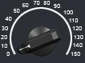

要正确操作华兴数控系统，必须掌握各种功能的操作方法及所显示的各种信息的含义。数控系统提供的全部操作功能可由键盘操作实现。系统的操作面板如图所示：
WA310车床面板

：进给升/降：在自动、手动下动态调节进给速度F
 ：主轴升/降：在自动、手动下动态调节主轴转速S（仅在主电机变频调速时有效
：主轴升/降：在自动、手动下动态调节主轴转速S（仅在主电机变频调速时有效
：主轴逆时针旋转(执行M04)
 ：关主轴，停止旋转(执行M05)
：关主轴，停止旋转(执行M05)
：主轴点动。按下该键时主轴顺时针转动，松开时主轴停止转动
：冷却液开/关控制
 ：设定手轮脉冲倍率，设定范围：×1、×10、×100
：设定手轮脉冲倍率，设定范围：×1、×10、×100
：单步换刀。每按一次，系统按顺序换下一把刀。
：选择手轮方式下进给控制的机床运动轴。
：手动速度，在F100、F600、F1500快速切换
：主轴夹紧/松开
：与循环暂停相比，系统多了关主轴的操作，直到用户按 继续执行后续程序段，或按
继续执行后续程序段，或按 终止本次自动循环操作
终止本次自动循环操作
 ：循环取消，终止当前程序的自动循环加工操作，只有系统处于循环暂停（进给保持）状态时，该按键才有效
：循环取消，终止当前程序的自动循环加工操作，只有系统处于循环暂停（进给保持）状态时，该按键才有效
：循环暂停（进给保持），系统暂停执行当前程序，直到用户按 继续执行后续程序段，或按终止本次自动循环操作
继续执行后续程序段，或按终止本次自动循环操作
：循环启动，用于启动当前程序的加工执行。在OPERT主功能界面下，若用户已选择好待加工的程序，在“自动”子功能下按此键即开始进行当前程序的加工。
：手动X负向进给
：手动X正向进给
：手动Z负向进给
：手动Z正向进给
：手动快速进给选择键。在非模态情况下（位参数20号的第六位为0时），与手动进给键中的任一键同时按下，机床进行快速移动，移动速度由10号系统参数设定；在模态情况下（位参数20号的第六位为1时），每按一次手动快速键，系统切换一次加速状态，比如上电时为非加速模式，按手动进给键时系统进行快速移动，若再按一次手动快速键，则回到手动速度来运动。